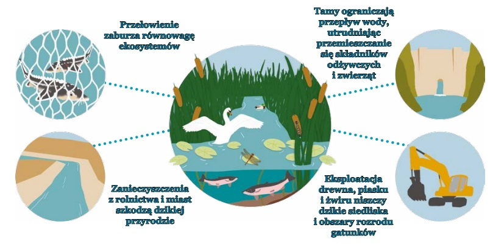

WODY SŁODKIE: GŁĘBOKA ANALIZA
Woda słodka ma kluczowe znaczenie dla przetrwania wszystkich lądowych form życia – w tym ludzi – a mimo to siedliska ,
takie jak rzeki , strumienie , mokradła i jeziora , są jednymi z najbardziej zagrożonych na Ziemi . Ludzie niszczą cenne
słodkowodne ekosystemy na wiele różnych sposobów . Zmiana biegu rzek i budowa tam ogranicza przepływ wody i niesionych
przez nią bogatych w składniki organiczne osadów , które w rezultacie nie mogą zasilać ekosystemów . Przerwanie ciągłości
systemów wodnych uniemożliwia też wielu gatunkom przejście przez kolejne fazy cyklu życiowego.
CO MOŻEMY ZROBIĆ?
Zespół naukowców i ekspertów ds. polityki środowiskowej z całego
świata opracował złożony z sześciu punktów plan odbudowy, który
korzysta ze sprawdzonych rozwiązań, żeby odwrócić postępującą
katastrofę.
